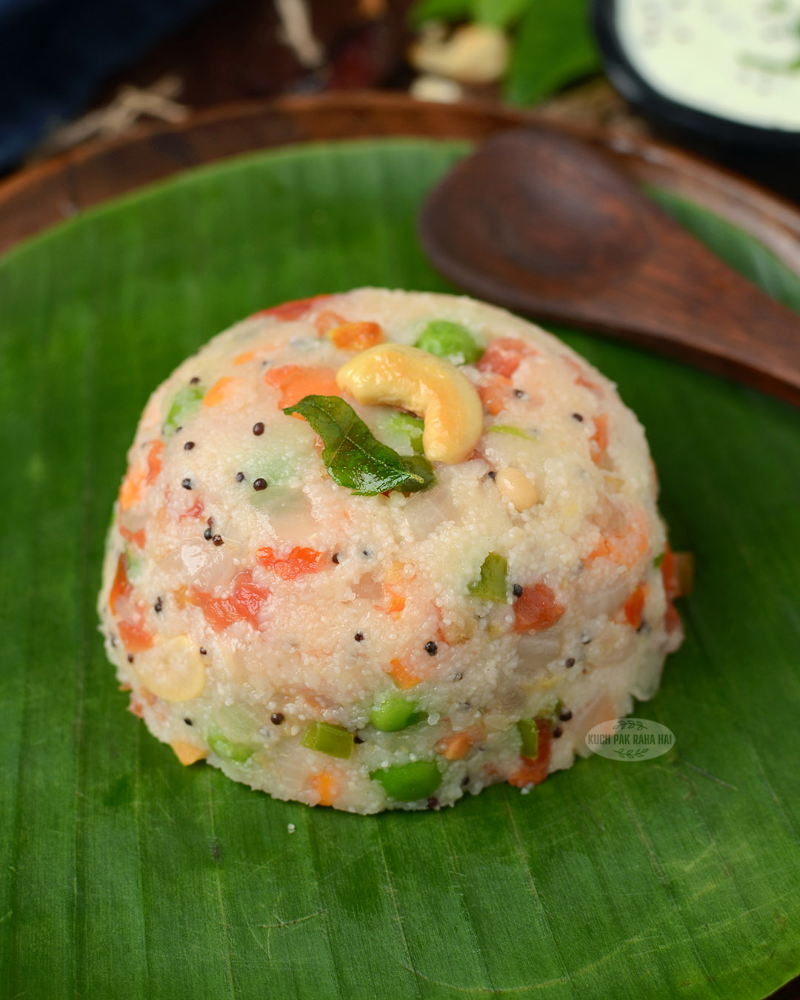

South Indian Food
Dosa
Ingredients: Rice, Urad dal, Fenugreek seeds, Salt.
Recipe: Soak rice and dal overnight, grind to a batter, ferment, and cook on a hot griddle.
Idli
Ingredients: Rice, Urad dal, Salt.
Recipe: Soak rice and dal, grind to a batter, steam in idli molds.
Sambar
Ingredients: Toor dal, Tamarind, Vegetables, Sambar powder.
Recipe: Cook dal, add tamarind and vegetables, season with spices.
Rasam
Ingredients: Tomatoes, Tamarind, Rasam powder, Coriander.
Recipe: Boil tomatoes, add tamarind and spices, simmer.
Upma
Ingredients: Semolina, Vegetables, Mustard seeds, Curry leaves.
Recipe: Roast semolina, sauté vegetables, add water and cook.